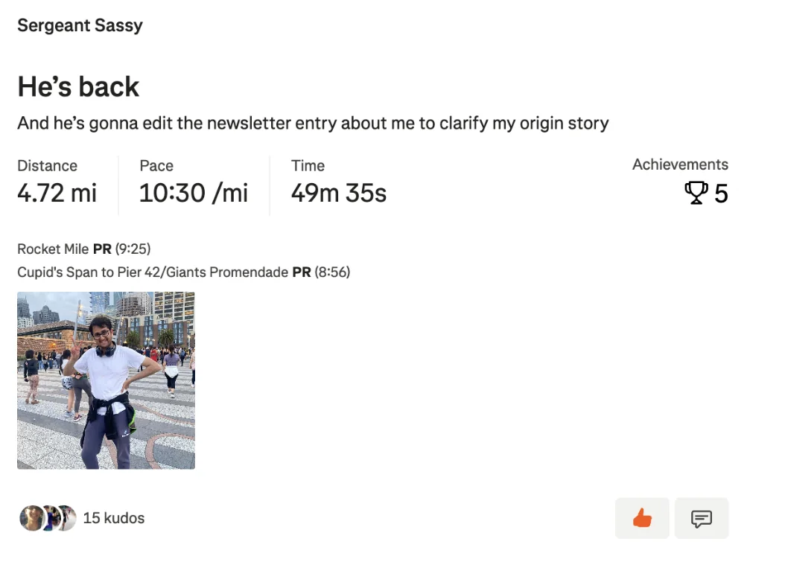
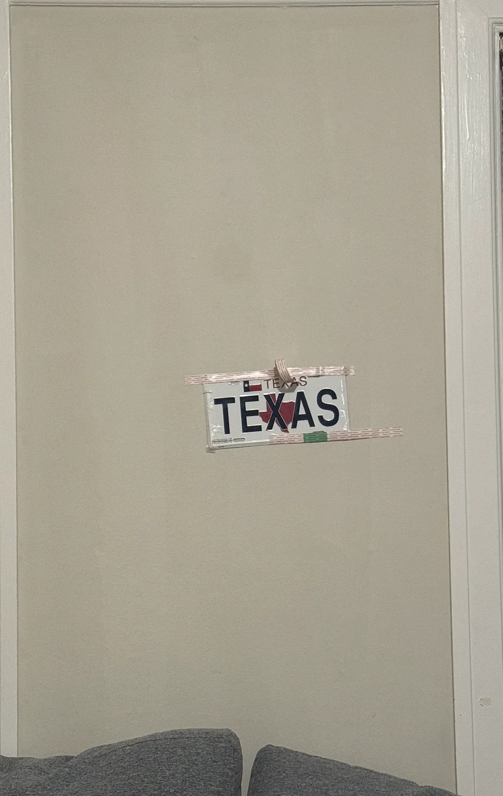
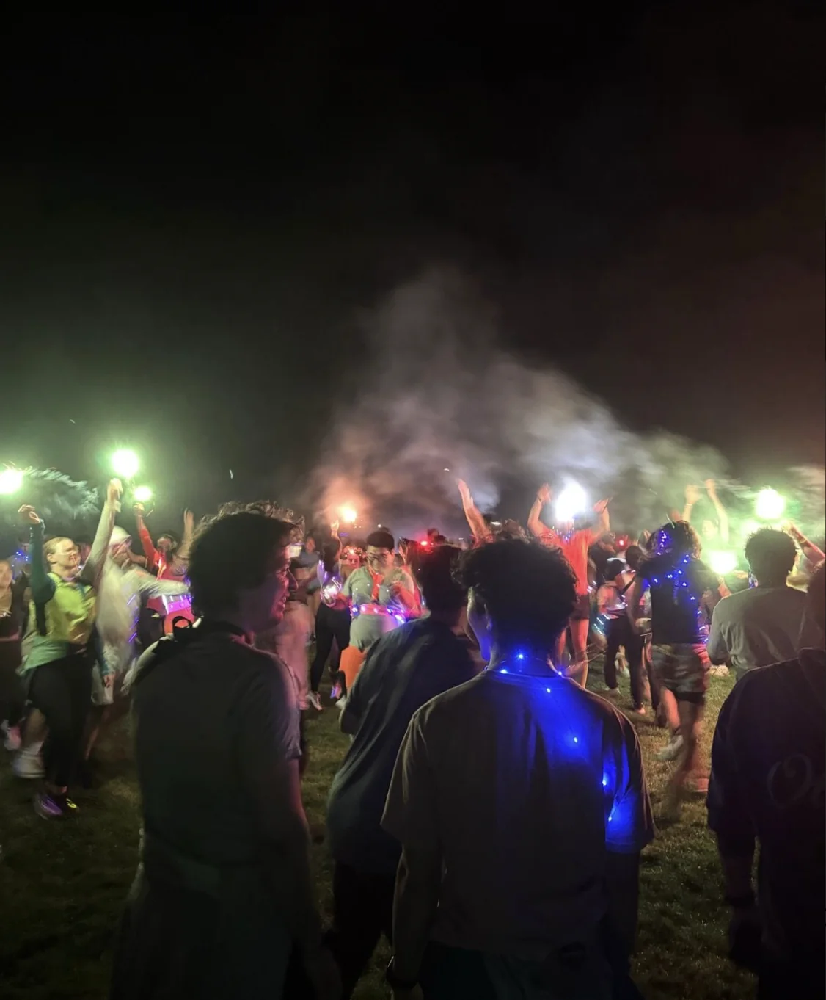
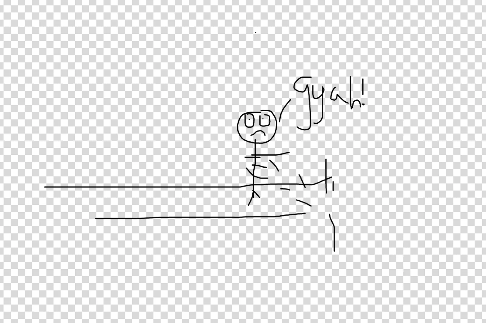
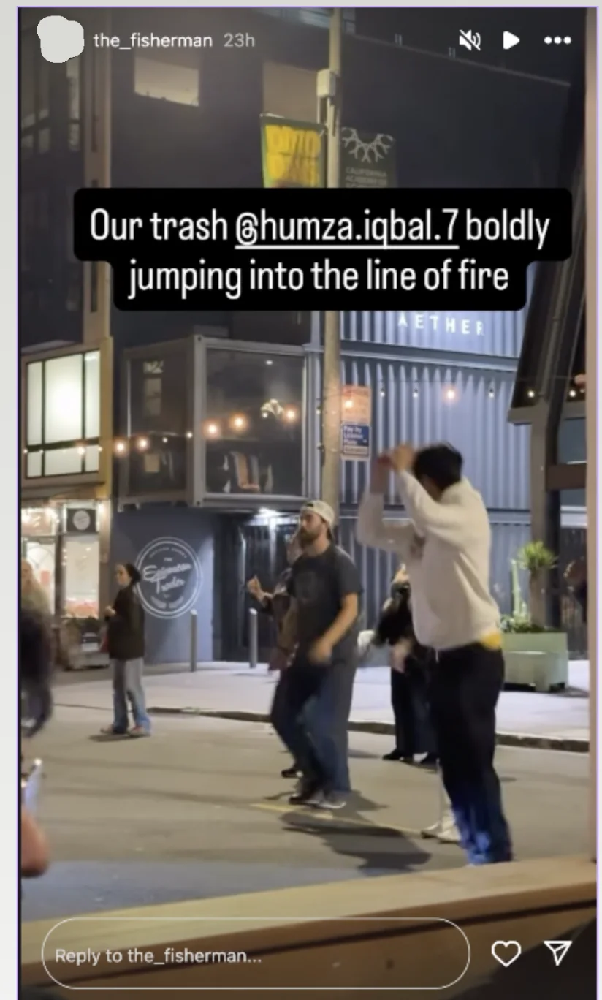

Water
Previous newsletters
If you want to see any of the previous newsletters look here
Monday
After just coming back from Europe I wake up in the middle of the night trying and failing to sleep. Ultimately I get up and go to work with a bit of a headache but fine enough.
It was nice being back and seeing everyone. A lot can happen in startup land in a week so I start off trying to get my bearings back. After a bit of catching up I settle in and work proceeds normally.
Around 7 or so I can start to feel the jetlag coming so I head home and a short while later I crash.
Tuesday
My jetlag still persists as I wake up intermittently. This bout is a bit interesting as I wake up to see a message from my manager asking me to meet outside a cafe in Hayes Valley around 8:15. For some context we generally have standup at 10 so this is definitely abnormal. I’m too tired to question what it means at the moment so I think nothing and go back to bed.
When I wake up I head off to this meeting wondering if I’m getting fired or something. I hadn’t gotten any sort of warning or PIP so I discounted this and headed over to the meeting.
I get there and my manager immediately opens with “I want to keep this conversation short because it won’t be easy for either of us” and my heart sinks. Turns out I am in fact being laid off. I won’t go into full details here but the short version is that the skills that I’m strongest at aren’t the ones the company needs. I won’t go into the full details here but perhaps a short version is that originally the assumption is the company would be going deep on a particular set of skills which was originally what I interviewed for. While I could work on other projects it evidently wasn’t up to the standard they wanted and so chose to let me go. My manager did say some conciliatory stuff with this like “When this happens it's generally the fault of the employer” and so on. If I’m being honest here my one complaint was I wish I was given more warning as I did feel pretty blindsided by this. I’m also not sure how I feel about this having been done early in the morning at a random spot outside of work. Interestingly my manager explicitly said it wasn’t because of the vacation I took and that he said he was glad I took it and that it was well earned. I didn’t even think about that at the time but some other people asked me about that when I told them given the timing so sharing that here.
For a while I’m just sorta stunned. Its really. Wow. There have been times where I’ve been stressed and I’ve thought about, fantasized even, about this sort of thing happening. In those fantasises I’d always respond with some sort of witty retort, laugh, maybe do something cool. Here I was closer to a deer in the headlights. Ok thats not entirely accurate I follow along enough in conversation but I certainly didn’t have the confidence I did in my fantasies.
Once the conversation wraps up I walk home. I’m stunned enough that walking home kinda feels like I’m walking through water. Steps feel slower and more measured. The mental burden I’m carrying in my mind translates to a slow and dreary gait.
To get myself out of a funk I start by just doing the things I normally couldn’t do at this time. I do laundry, I get some groceries, anything really to feel a bit more productive and keep myself moving.
In what I guess is the job equivalent of a rebound I finally respond to a Meta recruiter who had been emailing me for the last while and set up an intro call.
I spend most of the day doing nothing of any real value as I process what has happened. If I’m being objective there is some truth to the fact that this job probably wasn’t the best fit for me. There were times when I thought about the fact that while we use ML for the problems it is ultimately pretty surface level and not really related to the things I had been doing prior. Also I’ve certainly had to work longer hours than I had before and dropped some of the hobbies I used to do as a result.
Where do I go from here? What's next? I feel like I’m staring out into a sea of open possibilities. Thankfully I have saved enough that I don’t need to scramble immediately to find something which I am deeply grateful for. As of writing this newsletter I don’t have a solid next plan. We shall see what happens.
Later in the day I have a call with the Meta recruiter (“The Rebound”?) and it winds up being an incredibly soulless exchange where she asks me how many years of experience I have along with my programming languages with the same level of passion I have towards cleaning my apartment while I respond in turn with the passion I only reserve for clipping my toenails.
Afterwards I plan to go home and visit my parents, an activity which again I don’t normally have time to do during the week. I have an unusually hard time getting out of bed which generally seldom happens to me. Lethargy getting out of bed isn’t generally amongst the Humza demons. Its almost like I had to fight someone else's demon. Or maybe the demon was loaned out to my collection.
Nevertheless I get out and go home. It's nice seeing my family and they definitely appreciated the chocolate I brought back from Switzerland. We catch up for a while only for the jetlag demon to promptly one shot me around 8.
Wednesday
I’m still at home so I decided to go for a walk around my hometown which I haven’t done in years. Generally I’m either too busy to come back home, or spending time with my family when I am. In the morning everyone but me is working so I take the chance to go for a walk to Tiburon which I don’t think I did since high school. Back then a 1.5 hour walk to Tiburon was on the upper end of what I’d do, and a 3 hour walk to Sausalito was the height of my powers. Oh how things have changed.
After going home and spending a bit longer with my family I head back for run club. The run itself isn’t too notable except for the fact that I see "Sergeant Sassy” who mentions that I bungled the origin story of her nickname in the newsletter when I first introduced her and requested an addendum. For the first time in newsletter history I made an addendum which can be found here. She even added the request for an addendum as part of her Strava for the run

Sadly I can’t stay for the whole run as I have other fish to fry. Or perhaps more accurately “The Juggler” does as I go to his place for a fish fry. There I saw “The Philosopher” and appropriately enough “The Fisherman”. I really wish I liked fish more as it looked delicious but sadly did not taste that way to me :(. Big thanks to “The Juggler” for putting together was fun!
Thursday
I go to run club in the morning and for the first time I actually decide to do the whole run. Usually I either show up at the end for the post run hang or I try but fail to keep up since my legs are still sore from Wednesday night run club but today I managed the whole way through.
Once I go home I decide to start testing the water by applying to jobs that I’m not really that interested in but figure may as well apply for / interview with to shake off any rust I have.
After some time of this I decide to do a trash pickup in the middle of the day over in the Marina. Only me and the organizer actually show up to this so I wind up spending an hour and a half picking up trash by myself which is actually a pretty relaxing experience. Its essentially just walking around which I enjoy anyway. I chat with the organizer for a while after its finished and then head to Dolores Park for pickup Volleyball.
A number of friends play Volleyball and I thought it would be fun to try but never really got around to it until now. I never really played before but I have something better than experience … I watched all four seasons of the volleyball anime Haikyu! I was ready! I knew all the positions! I knew the jump serve! The volleyball world was about to be reckoned with!
Ok maybe that's not quite what happened. Instead I was the one who was reckoned with. Honestly I think Haikyu should have come with a disclaimer that watching this show will not make you an expert in the sport. My receives were awful. My serving was … actually ok. My elbows and fingers got hurt like nobody's business. But it was a lot of fun! There were people there with more experience than me to show me the ropes but not so much more experienced that I was abnormally bad. We were all just having fun playing around.
In Volleyball everyone rotates being either in the front and close to the net or in the back further away. I definitely prefer being up front as I have a better chance of getting the ball over the net rather than receiving a serve and passing well.
Interestingly “The Juggler” was also there playing Volleyball as part of a separate league.
From there I go to bar night with “The Philosopher,” “The Juggler” and others. Twas a fun affair but nothing of too much note.
Friday
Today I take it chill and don’t do a whole lot of anything until the evening. Since I’m going to be hosting people soon I decided to decorate my walls a bit. I’ve gotten feedback that my walls are rather barren and I’m pleased to report I’ve now taken a first step towards fixing that with this!

My walls are oozing character
When that rolls around I host a game night with “The Taco,” “Always causing a Racquet," “The Pasta Prince,” “The Writer,” “The Raja of Rhthym,” and “The Film maker”. It's a fun time as always.
From there I go to a special late night run hosted by Midnight Runners. Whenever I tell anyone about Midnight Runners I’m always asked if I actually run at Midnight only to respond in the negative. Today though that finally changes since Midnight Runners hosts their once a year city of lights Midnight run. We go down to the Marina and run through The Palace of Fine Arts and the Marina Green for a roughly 3 mile run.

Its a party alright! I did not realize how cool the Palace of Fine
Arts looks at Midnight
The only catch was when we finished the run near a grassy field and got blasted by the sprinklers which certainly built character.

I’ve always enjoyed Midnight Runners but this was the first time it got me wet.
Saturday
Today starts off with my usual trash pickup. We got a pretty group of people today including “The Philosopher,” “The Writer,” “Granola Girlie,” “The Notetaker,” “The Politican” and many more. Along the way I got “-1 Humza points” for repeating a standard joke of mine when a stranger thanked me for picking up trash and “+1 Humza points” for saying something novel that I don’t remember. I’m technically neutral but I think my Humza stock went down a bit.
Afterwards I went home again to see my family since they’re going on a Europe trip starting on Sunday. They actually asked me if I wanted to come since I’m now free but I decided to stay since I do have some stuff I wanted to do during their trip window. After seeing my family off on their European trip I come back and go to a bar crawl hosted by a friend of “The Fisherman” over in Hayes Valley.
Here I hang out with “The Fisherman,” “The Writer,” “The Hombre,” “Mr. Green flag” amongst others. We have a good time hanging out and catching up. Outside one of the bars there is some line dancing which I decide to get in on. My line dancing skills are about up there with my Volleyball skills and my not getting laid off this week skills but nevertheless I hop in and I also find it pretty fun.

Hat tip to both “The Fisherman” and “The Writer” for capturing this glory
At one point we stop for food over at The Bird where I get a fried chicken sandwich which tastes great at first but gives me a bad headache and anxiety afterwards. While at the restaurant we watch a boxing match between these two guys named Crawford and Canello which is supposedly historic for reasons I don’t know enough about boxing to articulate.
I never watched a boxing match before this but it was interesting. I didn’t realize that boxing exchanges were short and bursty. The actual blows exchanged tended to only happen for around 5-10 seconds at a time with most of the time being spent prowling around looking for an opening. It was definitely cool to see and while I probably wouldn’t watch boxing by myself I think it would be a bunch of fun to watch with friends.
By this point I’m unfortunately getting quite tired and opt to go home. Part of why I decided to go home is that I get really anxious in ways I haven’t gotten in many years (decades is probably more accurate).. I’m quite in my head, I have a bad headache, and I feel distressed. I suspect it's because of something I ate as this has happened in the past when I eat things I shouldn’t such as food high in dairy. Thankfully this gets resolved by going home and sleeping so this isn’t too serious but I don’t think I’ll be eating at The Bird again.
Sunday
The day starts with trash pickup where I pick up trash with some new folks. Nothing really eventful here but it was good.
Afterwards I hang out with “The Quant” and we walk around for a while. We try to go to Plow to meet with “The Plower” while she’s eating brunch but we’re kicked out of the restaurant since there isn’t enough room for us and its quite busy.
From there I hang out with “The Plower” and “The Taco” and we go to Tartine. We catch up for a while and then I go home to write this newsletter.